- Object ID: 00000018WIA3087E230GYZ
- Topic ID: id_16140199 Version: 1.17
- Date: Oct 1, 2025, 8:55:56 PM
Adjusting the patient table
Prerequisites
| Personnel requirements | |||
|---|---|---|---|
| Required persons | Preliminary requirements | Procedure | Finalization |
| 1 | - | 30 minutes | - |
| Tools and test equipment | |||
|---|---|---|---|
| Item | Quantity | Part number | Manufacturer |
| Nonmagnetic Titanium Service Tool Kit, Large Set | 1 | 5112581 | - |
| PET/MR Body Coil Centering Tool | 1 | 5497881 | - |
About this task
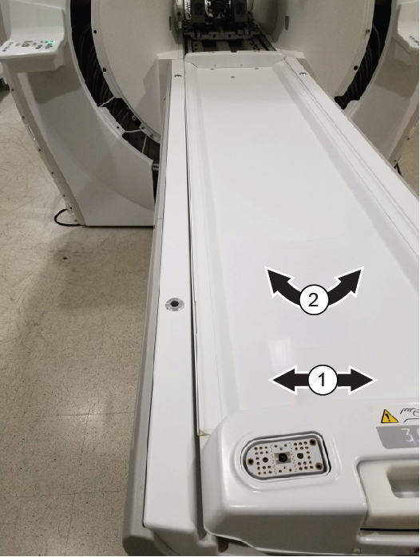
| 1 | Left-right alignment |
| 2 | Skew alignment |
Procedure
- Gently engage the dock by stepping on docking pedal (shown below). Be careful not to force the dock engagement since adjustments have not been completed. Pushing the pedal too hard can shift positioning.
Figure 2. Docking pedal 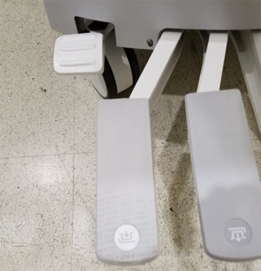
- Run the LPCA into the bore by manually lifting the LPCA latch and using the Operator Control Panel (OCP) buttons to advance the LPCA.
Figure 3. LPCA latch 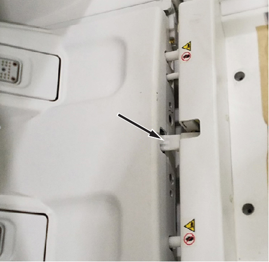
- Examine the left and right alignment of the table cradle to the LPCA rails (blue lines) on both the left and right hand side. This alignment should be even on both sides.
Figure 4. Left and right alignment 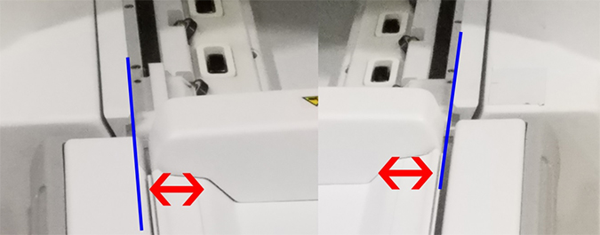
- Check the gap between the table end and front bridge by using the centering tool as shown. The specification is 31 +/- 6 mm. The maximum width is the full width of tool. The minimum width is the 25 mm line. If both sides are not even, the skew will need to be corrected.
Figure 5. Centering tool 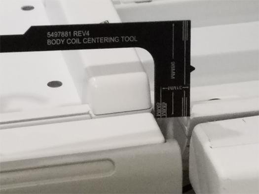
- Push the button on the left side in back of the table cradle. Gently slide the cradle into the bore (being careful to not slam it) and note where it catches. This should determine necessary left-right alignment correction. The goal is for both sides to be even.
Figure 6. Table cradle 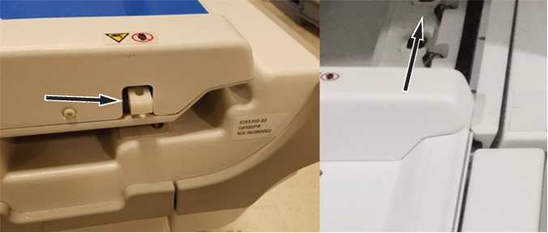
- From the end of the table, align your eye so that the line of the bore is straight (red box) and see if the table is parallel and in line (blue line). Determine how the alignment needs to be adjusted.
Figure 7. Table alignment 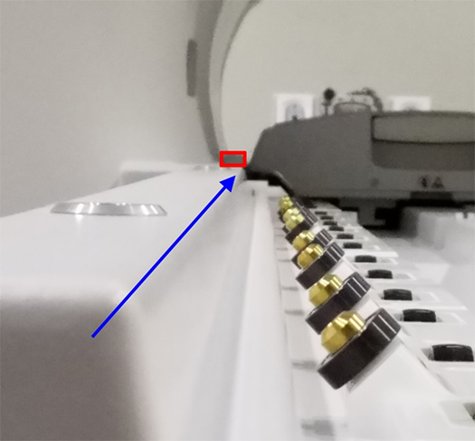
- Determine the necessary table alignment.
- If the left to right positioning is centered (so the table does not catch) and the skew is parallel, you do not need to continue with this procedure.
- Otherwise, remove the cradle and undock the table.
- Check that the feet on both sides of the floor mount are down all the way to the floor as shown. This is critical because the insert mounts can be affected when dock screws are loosened later in this procedure.
Figure 8. Floor mount foot 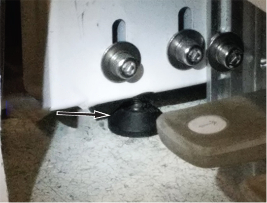
- Loosen the 14 mm bolt on the dock as shown.
Figure 9. Dock bolt 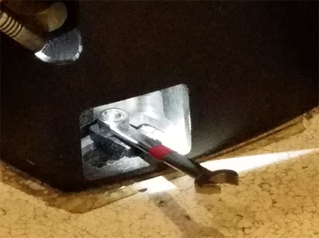
- Adjust only the bolts for needed adjustments as explained below (for example, only left-right but not in-out). These bolts are 17 mm.
- For left-right adjustment, loosen the bolt at position 1 on both the left and right side of the mount.
Figure 10. Bolt adjustments 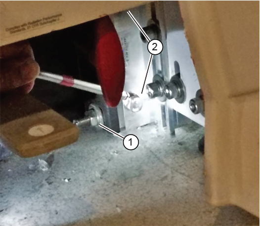
Item Description 1 Left-right adjustment 2 Skew adjustment - For tables currently skewed to the right (needing to adjust more to the left):
- Loosen only the bolts labeled 2 on the right-hand side of the mount. Then push in the dock, which will close the gap measured with the centering tool in Step 5 on the right hand side.
-
Or, loosen only the bolts labeled 2 on the left-hand side of the mount. Then pull out the dock, which will widen the gap measured with the centering tool in Step 5 on the left hand side.
- For tables currently skewed to the left (needing to adjust more to the right)
- Loosen only the bolts labeled 2 on the left-hand side of the mount. Then push in the dock, which will close the gap measured with the centering tool in Step 5 on the left hand side.
-
Loosen only the bolts labeled 2 on the right-hand side of the mount. Then pull out the dock, which will widen the gap measured with the centering tool in Step 5 on the right hand side.
Figure 11. Skew adjustment bolts 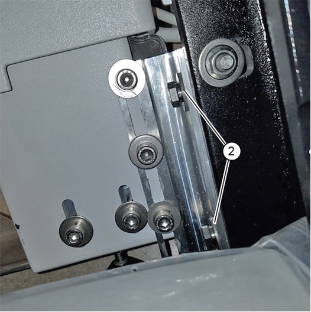
Figure 12. Red handle position 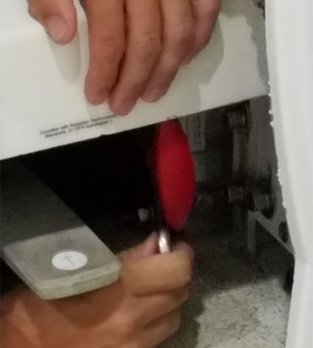
- For left-right adjustment, loosen the bolt at position 1 on both the left and right side of the mount.
- Gently move the dock as needed.
- Push the dock left or right as appropriate.
- For skew, push in or pull out the dock as described in Step 10.
- When adjustments are complete, fully tighten all bolts.Note Fully tighten all bolts. If they are not firmly tightened, everything will shift when the table is docked. Then adjustments will need to be repeated.
- Check the alignment according to the instructions in Step 3 through Step 7.
- Visually check the alignment. If the table is aligned correctly, both sides will look as if they need to rotate slightly but in opposite directions.
- Check the alignment by pushing the rear button and sliding the cradle into the bore. It should go smoothly without catching on either the left or right side. When correctly aligned, pushing the cradle to one side (left or right) should cause it to catch only on that side. When sliding the cradle up the center, it should not catch.
- If alignment needs further adjustment, repeat steps Step 3 through Step 13 until it meets specification.
- Adjust the table height. See Table Height Adjustment.
- Adjust the cradle to LPCA latch. See Cradle to LPCA Latch Adjustment.
- Do dual drive quadrature tool calibration. See Dual drive quadrature tool calibration.